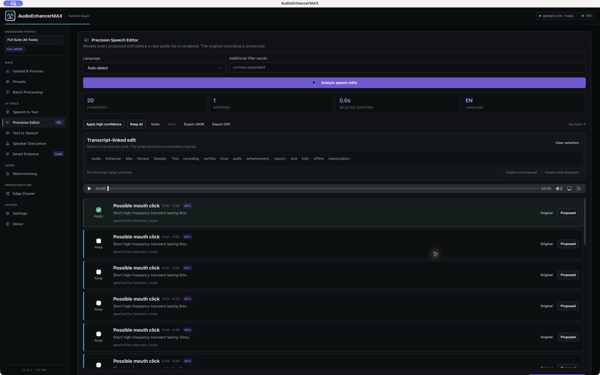
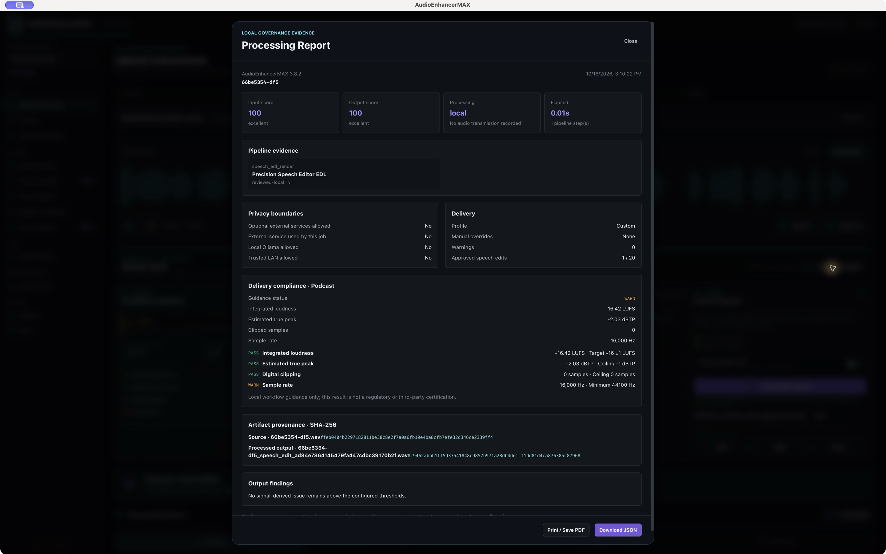

Quattro casi, quattro domande diverse
Uno studio, una vulnerabilità corretta, un esperimento e un abuso intenzionale non sono la stessa cosa. Questi casi illustrano meccanismi di rischio specifici: non misurano il bilancio complessivo tra rischi e benefici dell'AI.
Studio empirico · 2024
Careless Whisper
Koenecke e colleghi hanno osservato, nel campione e nelle condizioni studiate, frasi inventate nelle trascrizioni di Whisper. Non è una misura degli errori della nostra build. AudioEnhancerMAX usa modelli della famiglia Whisper: anche elaborando localmente, il testo va confrontato con la registrazione.
Chi verifica le parole attribuite a una persona?
Vulnerabilità corretta · 2025
EchoLeak
Microsoft descrive una catena di prompt injection attraverso una email che, in determinate condizioni, poteva esfiltrare dati limitati accessibili all'utente tramite Copilot. La vulnerabilità è stata corretta. Il caso non prova una fuga di dati subita da clienti.
Quando un contenuto esterno viene scambiato per un’istruzione autorizzata?
Esperimento controllato · 2025
Project Vend
Nella prima fase dell'esperimento di Anthropic e Andon Labs, l'agente vendette anche sottocosto. La seconda fase migliorò i risultati, mantenendo debolezze davanti a interazioni avversarie. È una ricerca sui limiti della delega, non un'accusa di condotta non etica.
Quali vincoli controlliamo prima che una decisione diventi un’azione?
Abuso della voce · 2024
Le chiamate nel New Hampshire
Il 26 settembre 2024 la FCC annunciò una sanzione da 6 milioni di dollari per chiamate con una voce imitata di Biden e identificativo del chiamante falsificato. Il riferimento è a quel provvedimento amministrativo, non a una condanna penale o a una multa riscossa.
Chi autorizza una voce e cosa crede di ascoltare il destinatario?
Dal principio a una scelta osservabile
Il collegamento fra questi casi e AudioEnhancerMAX è una mia interpretazione progettuale. Le fonti non valutano il nostro prodotto. Le scelte qui descritte sono documentate nel codice e nei flussi indicati.
Conservare la fonte
Il Precision Editor conserva la registrazione importata e produce un nuovo WAV. Il confronto originale/proposto permette di riesaminare il risultato.
Limite: Annullare una decisione locale non ritira le copie già condivise.
Riferimento nel codice o nella documentazioneSeparare proposta e azione
I candidati del Precision Editor partono da Keep. Il rendering applica solo le decisioni Apply; la cronologia consente Undo e Redo.
Limite: Il perimetro è questo editor. Non tutti i filtri richiedono una conferma per ogni modifica.
Riferimento nel codice o nella documentazioneLimitare la delega al modello
Smart Enhance sceglie la catena DSP attraverso misure e regole locali. Il testo esplicativo opzionale prodotto da Ollama è separato dalla scelta dei parametri.
Limite: Una regola deterministica può comunque essere inadeguata al contenuto.
Riferimento nel codice o nella documentazioneRendere visibili le trasformazioni
Report e Project Capsule registrano informazioni sulle elaborazioni e hash SHA-256. La Capsule esclude il sorgente per impostazione iniziale.
Limite: Gli hash verificano integrità rispetto al manifest. Non certificano verità, identità o consenso.
Riferimento nel codice o nella documentazioneEsplicitare i flussi dei dati
Elaborazione di base e trascrizione locale sono distinte dai servizi TTS esterni opzionali e dalle integrazioni LAN.
Limite: Elaborare sul proprio computer non elimina errori del modello o rischi di sicurezza.
Riferimento nel codice o nella documentazioneDichiarare i limiti del consenso
L'enrolment dei profili vocali richiede una conferma di consenso. La sintesi personale dipende anche dal runtime opzionale MakeMyVoice.
Limite: È una dichiarazione, non una verifica indipendente dell'identità o dei diritti, né una garanzia per ogni percorso di importazione.
Riferimento nel codice o nella documentazioneDue schermate, comprese le avvertenze
Schermate dell'app installata tramite TestFlight su un Mac fisico, versione 3.8.2, build 3.8.3, acquisite il 16 ottobre 2026. Mostrano un campione di prova; non costituiscono una valutazione generale della qualità audio.
La proposta resta una decisione da prendere


Un report utile mostra anche ciò che non torna


Quello che resta da verificare
AudioEnhancerMAX non è un agente autonomo. Questa pagina non attribuisce al prodotto una certificazione etica, di sicurezza o di accuratezza. I controlli descritti hanno un perimetro e richiedono manutenzione.
- Le trascrizioni possono contenere errori. Respiri, click e silenzi sono candidati tecnici da ascoltare nel contesto.
- Prima di pubblicare una voce, occorre verificare autorizzazioni e contesto. Il software non determina da solo la legittimità dell'uso.
- Sono da progettare ulteriori valutazioni su silenzi, accenti, condizioni del parlato e comprensione delle anteprime. Non le presentiamo come risultati già ottenuti.
Metodo: lettura mirata di codice e documentazione al commit 9efa8d8, con le schermate della sessione di prova indicata. Per questo articolo non sono stati eseguiti nuovi test di sicurezza, benchmark delle allucinazioni o test percettivi.
Fonti e perimetro
Fonti consultate il 17 ottobre 2026. I casi mantengono le date e le condizioni delle rispettive pubblicazioni.
Quali decisioni rendi verificabili?
Nella prossima dimostrazione: ascoltare la fonte, esaminare una proposta, scegliere Keep o Apply, tornare sulla decisione e leggere il report. La disponibilità delle versioni e i canali di distribuzione sono indicati separatamente nella pagina di stato.